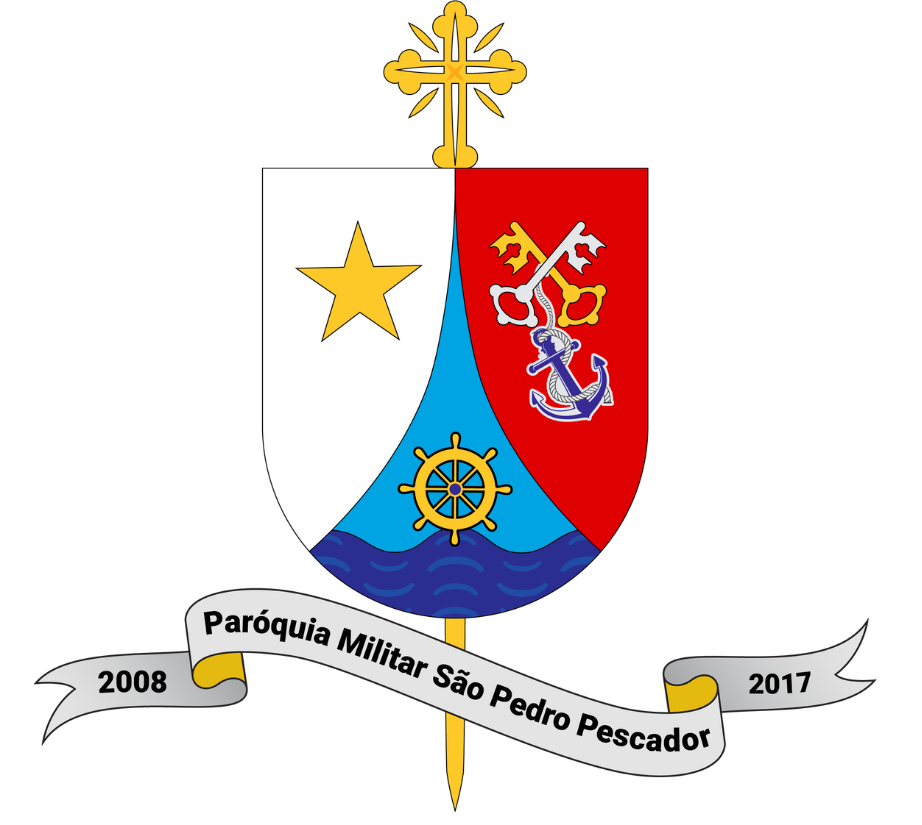
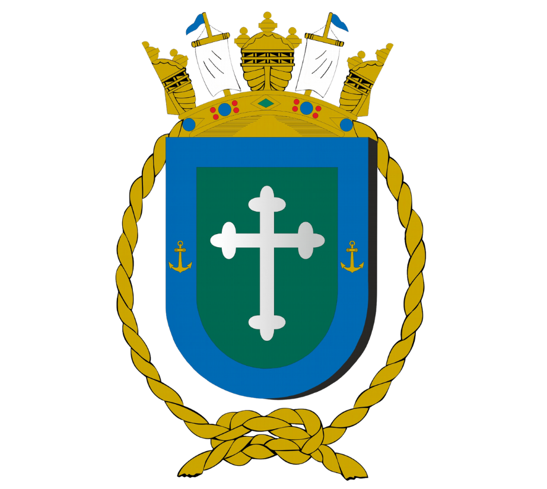
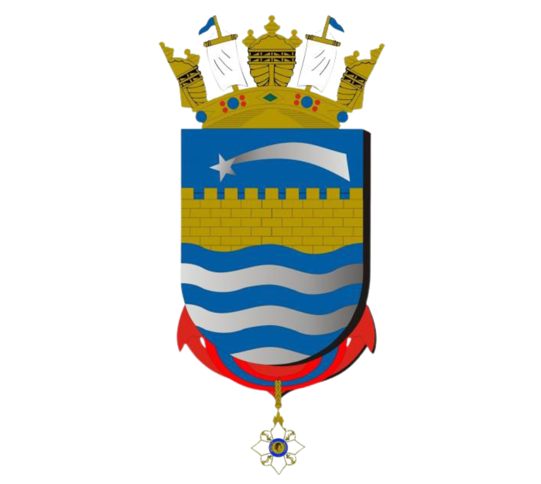

Cifras da Missa
Capela Militar da Base Naval de Natal
23º Domingo do Tempo Comum · 06 de setembro de 2026
🎸 Violão
Letra + cifras, com mudança automática de tom.
🎤 Canto
Somente as letras, com leitura limpa e fonte ampliada.


